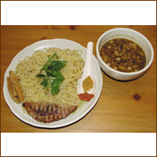

臨機の新作、味噌つけ麺「オシム」。なぜオシムかは…店で!

ワタル
1980年代よりフリーライターとしてさまざまなジャンルの人物をリポート＆プロモーション。現在は久保田利伸の仕事を中心に、オフの日はラーメン店のおやじとして厨房に立つことを人生の生きがいとしている。
臨機の新作、味噌つけ麺「オシム」。なぜオシムかは…店で!
東南アジアの犬は全体的に疲れている。これはカンボジアの無気力犬。
美川憲一の「お黙り!」のイントネーションで…「お持ち帰り!」
蕎麦屋カレーの到達点。大泉6丁目「やぶ重」の逸品。ウウッ…ウマイ!
大迫力の巨大カニ・ロボット。大木を根ッコごと引き抜き、そのまま移植させるのだ!
久保田利伸の靴。脱ぎ立て!
久保田のスタイリスト、後藤あけみさん。20代はディスコ・クイーン!
あけみさんのアシスタントの石川ちゃん。仕事できます!
良い子は真似しないよーに。深夜の焼ソバ&赤ウインナー&マヨネーズ!
マイ・ガーデンで読書をしていたら、左手にこんなゲストが。
バーテンダーのオサムちゃん。笑顔の裏にヒトクセあり!
久保田ファンのセリーヌちゃんから臨機へ差し入れ。激ウマでSO THANX!
浦嶋りんこ。壁紙撮影のオフ・ショットながら、ワタル的1枚!
最近、レバーペーストにハマってる。美味しいペースト知ってる人、教えて!
渋谷L地下1階の男子トイレ。デブはペーパーが脇腹に当たって取れないぞ!
マイ・ガーデンに種を蒔いたヒマワリが芽を出した。夏の大輪を願う!
臨機のマッツン。美味しいものを食べると、こんな笑顔になっちゃいます!
「完本1976年のアントニオ猪木」…猪木本で久々に大感動したぞぉぉぉ!
翌日結婚式のカップル。ベテランから一言…「離婚だけはするな!」
翌日記憶のないカップル。渋谷Ｍの店主は大森社長の大ファン!
久保田の仕事でニューヨークへ行きはじめた頃は、すべてが新鮮でワクワクの連続だった。そんな時期に買ったラスタ・カラーのネックレス。木製。首回り35cm。
＜応募方法＞
官製ハガキにて下記の宛先までお送りください。
〒106-8626 東京都港区西麻布1-14-2 疋田ビル302号
（株）ファンキー・ジャム「月刊ワタル画報 5月号プレゼント係」
（締め切り／6月末日消印有効）